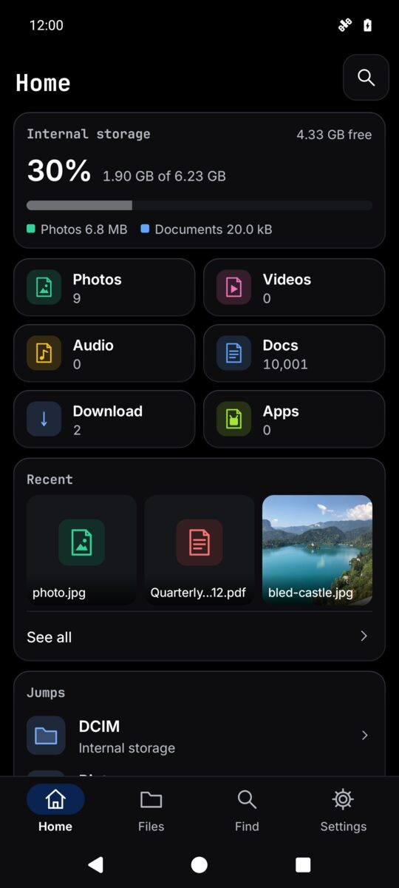
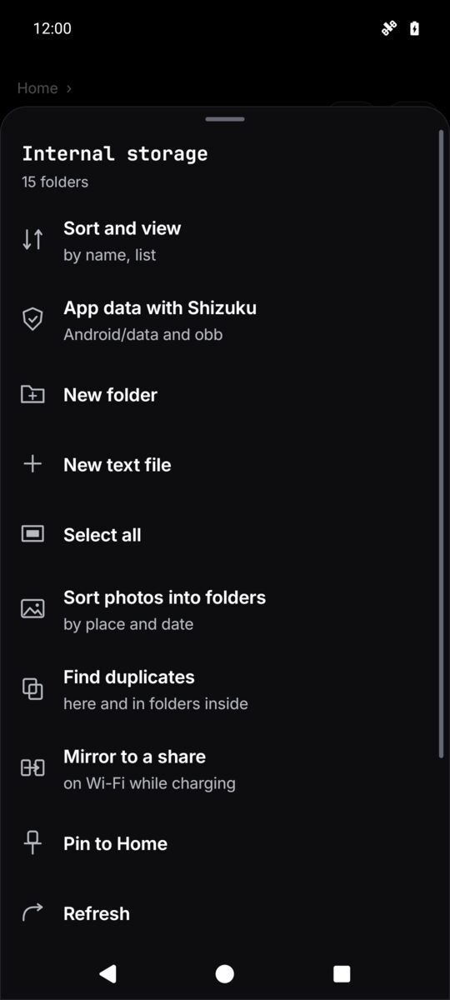
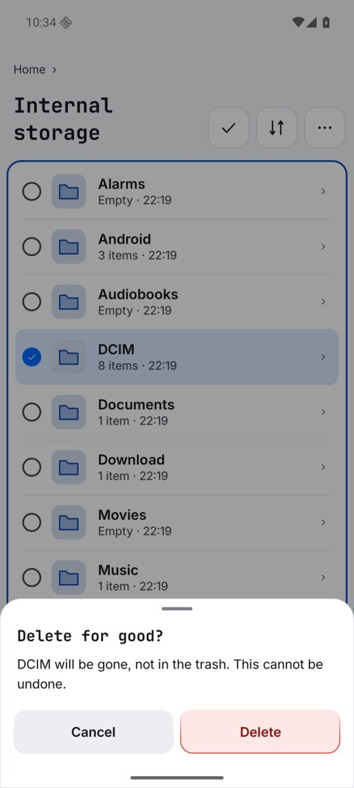
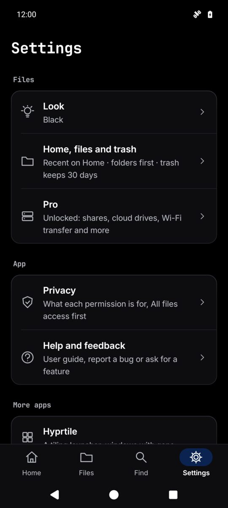
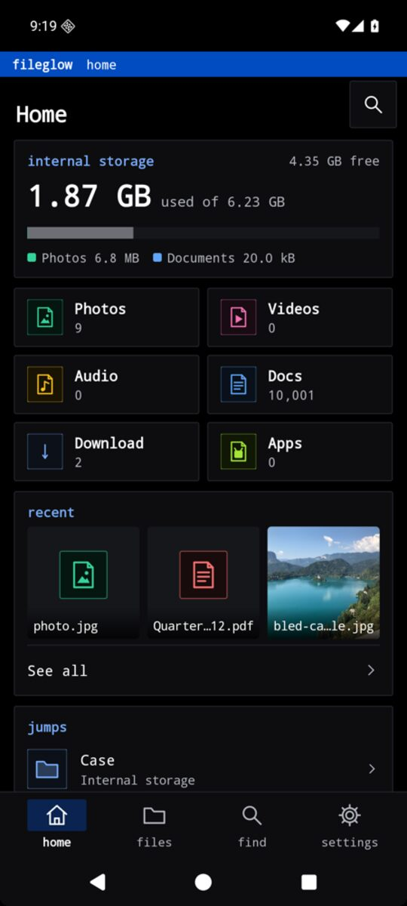
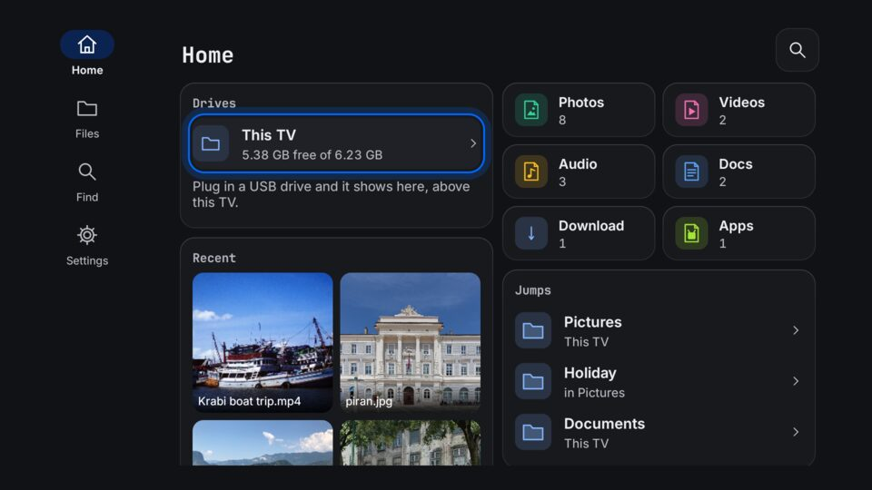
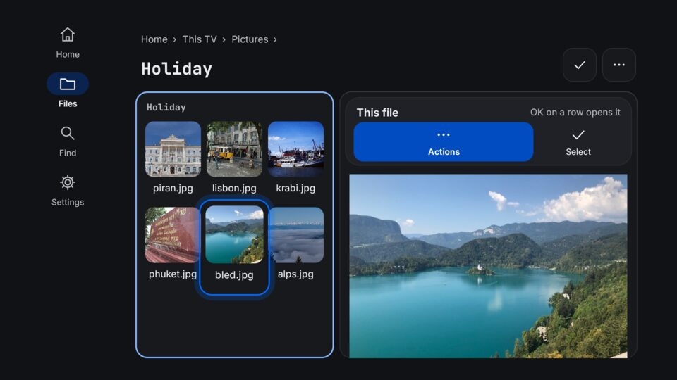
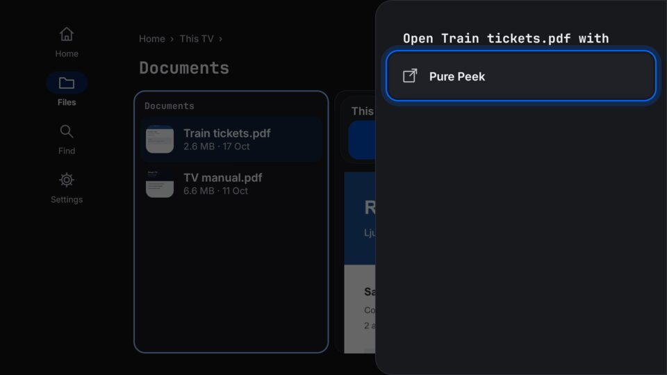
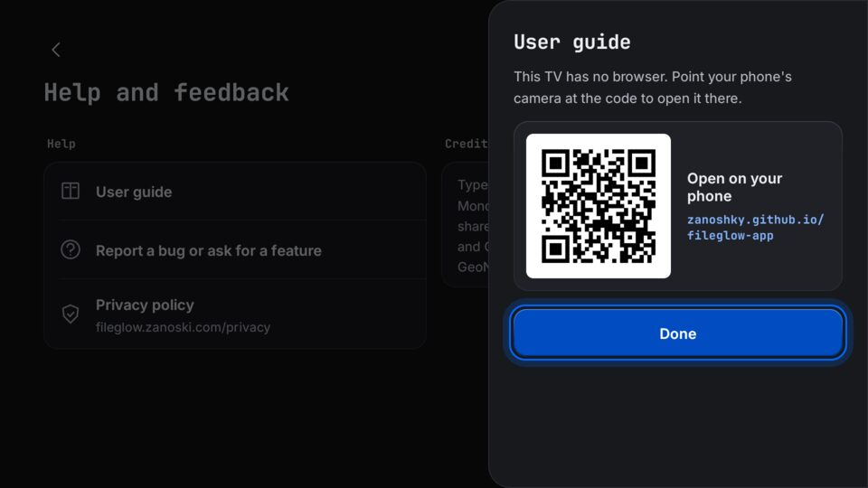
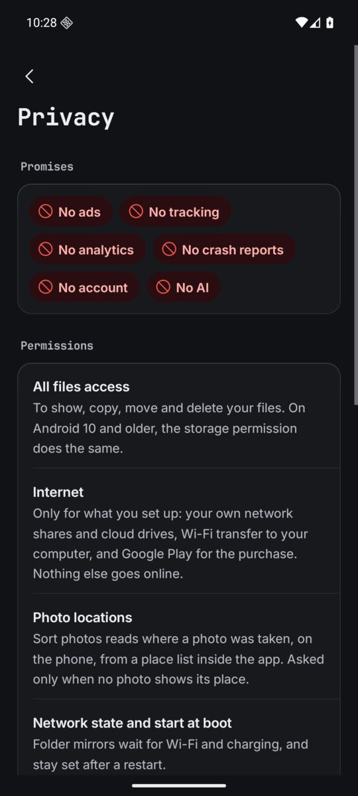

Guide
How Fileglow works
The first start
Fileglow asks for All files access, so it can show, copy, move and delete your files. It uses it for nothing else. On Android 10 and older, the storage permission does the same.
Four places in the bar
The bar at the foot of the screen has four places: Home, Files, Find and Settings. Tap one to go there; tap the one you are on to scroll back to its top. Settings is the last item, and its small pages open full screen with a Back arrow.
Home
Home shows your storage and what fills it, tiles for Photos, Videos, Audio, Docs, Download and Apps, the files you changed last under Recent, and the folders you open most under Jumps. Folders you pin, your network shares and, with Pro, your workspaces get their own cards. A card ends in See all; See all under Recent opens the full Recent list. The trash is a row on Home too.

Files
Files opens your storage as folders. Each folder is a list, a Details view or a grid, sorted by name, date, size or type, and Fileglow remembers the choice per folder (sort, the view and hidden files sit at the top of the folder's More, with defaults in Settings). Details shows Name, Size, Modified and Kind as columns, as many as the screen has room for; tap a heading to sort by it. A grid is small, medium or large, and a pinch on it steps the size. On a tablet or a phone on its side you get columns: the folder and a preview beside it.
Tap a file to open it. Fileglow previews photos, videos, PDFs, music, text, code and what is inside a zip. A photo on the phone opens in Fileglow's own viewer: pinch or double tap to zoom, and swipe left and right through the folder's photos. At the top, Open in Pure Peek hands it to Pure Peek, the full viewer, or Get Pure Peek when it is not installed. Turn the viewer off in Settings, Files, Open photos here. Touch and hold a row, or tap the tick in the header, to pick files; tap more rows to add them.
- On a file or picked files
- Open with, Send to another app, Copy, Move, Rename, Zip, Unzip here, Move to the trash, Delete for good, Details, Copy the path and Pin to Home.
- Copy and move
- Pick Copy or Move, open the folder you want, then tap Paste here (or Move here).
- Rename many
- Pick several files and Rename: one name a line, or find and replace.
- In a folder's More
- New folder, New text file, Select all, Sort and view, Refresh, and the Pro tools for that folder.

It never writes over a file
Your files may be the only copy of your photos, so not losing them comes before everything else. All of this is free.
- Names already here
- When a paste meets names that are taken, Fileglow asks once: Keep both (the new ones get a number), Skip them, or Replace. Replace keeps the old file in the trash and merges folders; it is only offered on the phone's own storage.
- Trash and Undo
- Move to the trash puts things in a trash on that volume, kept 7, 30 or 90 days (30 unless you change it). After a job a note offers Undo, and one Undo brings everything back. The trash page shows a picture of each thing; tap one to look at it without taking it out. Put everything back sends all of it home at once, and Choose what to put back lets you pick (hold one to start).
- Delete for good
- Always asks first, and cannot be undone.
- Checked copies
- A copy is checked whole before its original is removed, and one file job runs at a time.
- Leave the app
- Copy, move, zip and unzip keep going after you leave Fileglow or the screen goes off. A notice shows the job, its progress and Stop.
- A copy was cut short
- If Fileglow was closed while it copied, zipped or unzipped, the half made copy goes to the trash next time, with a note. The originals are never touched.

Find
Find, in the bar, opens the jump box. Type a few letters of a folder or file name: folders come first, and a found file opens its folder with the file under the cursor. Type a folder path and it goes straight there. With Pro, Find also matches the words inside text, code and Office files.
For other apps
When another app asks you to pick a file, Fileglow can be the picker: tap a file to hand it back, or pick several with Select. In the share sheet it shows as Save a copy: open a folder and the shared files are saved there, with one Undo.
Pro
Fileglow is free with no ads. Pro is one optional payment through Google Play, yours for good: no subscription needed and no account. Browsing, previews, copy and move with Undo, the trash, zip and unzip, renaming many files at once, Find and Save a copy stay free, and so does every safety check. A Pro control says Pro under its name and opens the list below.
- Network shares
- Your NAS, PC or server over SMB, SFTP, FTP and WebDAV, as folders. Add one in Settings, Pro, Network shares and cloud drives, and press Try it before Save.
- Dropbox and OneDrive
- Your Dropbox or OneDrive, as folders. You sign in on their own page. Until Microsoft finishes checking us, OneDrive's sign in page says Unverified.
- Films from your shares
- Play here plays them straight from the share, with subtitles beside the film; or Play in another app, or Fetch it whole, then open.
- Wi-Fi transfer
- Files to and from a computer's browser. Off until you start it: open the address shown on the computer and type the PIN. The PIN shows only on the transfer page in Fileglow, never in the notification. One computer at a time; it stops on its own after 15 idle minutes, five wrong PINs, or when you leave Wi-Fi.
- Vault
- Files sealed with a password of 15 or more characters and hidden from other apps. It locks two minutes after you leave Fileglow. A vault you made opens with its password, with or without Pro.
- Archives as folders
- Open a zip, 7z, rar (RAR5 too) or tar as a folder, read only. Copy files out to change them; moving out of an archive makes a copy. A file that unpacks to more than the free space is stopped before the phone fills.
- Search inside files
- Find files by the words in them, from a private index on the phone.
- Two tiles
- Two folders at once, side by side on a wide screen and stacked on a phone, with copy or move to the other tile; save them as a workspace on Home.
- Folder mirrors
- A phone folder kept copied to a folder on your share, on Wi-Fi while charging. Each file is read back and checked, and nothing is ever deleted.
- Find duplicates
- Files with the very same bytes, checked whole, on a page of their own with a picture of each. The oldest stays unless you keep another; Compare shows a set side by side. The rest go to the trash, so Undo puts them back.
- Similar photos
- Shots taken seconds apart that look alike, such as a burst or a few tries at one picture, even when a few pixels differ. Each set suggests its sharpest photo to keep, and nothing is chosen until you tap: Choose all but the sharpest, or Keep only this on the one you like. Compare shows sharpness, time and size side by side. Photos go to the trash, so Undo puts them back.
- Sort photos
- Into folders by where and when each was taken, from a place list inside the app. A preview shows the folder tree first and nothing moves until you press Sort; Put photos back, in the folder's More, undoes it, even days later.
- App data with Shizuku
- Android/data and obb through the Shizuku app, on Android 11 and newer. Folders of many thousand files open too.
Settings
Settings is the last item in the bar: cards of rows, each saying what is set now. A row opens its own small page; the arrow at its top left takes you back.
- Look
- Follow the phone (Light by day, Dark at night), where Fileglow starts, Light, Dark, or Black, true black for OLED. With Phosphor or Hyprtile as your home screen, turn on Match my launcher to take its look; or pick a ready launcher look, and fine tune the theme, picture, glass and CRT tube.
- Home, files and trash
- Show recent on Home, folders first, hidden files, light up the places you use most, the preview column, the text size of the lists, ask before moving to the trash, how long the trash keeps things, and Open the trash.
- Pro
- The Pro tools and the buy key, then Network shares and cloud drives, Wi-Fi transfer and Folder mirrors.
- Privacy
- The promises as red ban chips, every permission Fileglow holds and why, how shares and transfers are kept safe, and the privacy policy in full.
- Help and feedback
- This guide, the report page, the privacy policy and the credits.
- More apps
- Hyprtile and Phosphor, the launchers whose looks Fileglow can wear.
- Support the developer
- If Fileglow helps you, you can support it. Insider is an optional subscription, 0.99 a month through Google Play, that pays for bug fixes and for keeping the Dropbox and OneDrive links working. Insiders get new features first, their requests read first, and an Insider mark in About. Once you subscribe, the row says thank you and opens Google Play, where you cancel any time.
- About
- The version. Your files go only where you send them: Fileglow has no server of its own.

Your launcher's look
Fileglow starts on Follow the phone, light by day and dark at night, and keeps the look you pick. To wear your launcher's look, turn on Match my launcher in Settings, Look: with Hyprtile as your home screen you get tiles with gradient borders; with Phosphor, a glowing terminal on true black. Or pick Light, Dark, Black or any of 84 themes.

On Android TV and Google TV
Fileglow runs on Android TV and Google TV too: open files from a USB drive in other apps, copy, move and delete with the remote, and reach your network shares.
- The side rail
- Home, Files, Find and Settings sit in a rail on the left instead of the bar. Right from the rail goes back to the row you left.
- The remote
- Move with the arrows; a blue ring shows where you are. OK on a row opens it. Beside the files a panel for This file or This folder holds Actions and Select; the Menu key opens Actions too. In Select, OK on a row picks it.
- Sheets from the right
- Menus and questions slide in from the right side. Back closes them and puts you where you were.
- Open with
- Fileglow lists the apps on the TV that open the file. A TV has no share sheet, so Open with sends a file to one app.
- USB drives
- Plug in a USB drive and it shows under Drives on Home, above This TV.
- Open on your phone
- A TV has no browser, so links in Settings (this guide, the report page, the privacy policy) open a QR code. Point your phone's camera at it to open the page there.
- Look
- A TV starts on Follow the TV, light or dark as the TV's own dark mode setting says. Match my launcher and installing apps are not on a TV.

Home on a TVDrives, recent and jumps. 
FilesActions and Select beside the files. 
Open withThe apps on the TV that open it. 
Open on your phoneLinks become QR codes.
Privacy
No ads, no account, no tracking, no analytics, no crash reports and no AI. Fileglow goes online only for what you set up: your own shares and Dropbox, Wi-Fi transfer to your computer, and the Google Play purchase. Sort photos finds places with a list inside the app, so nothing about your photos goes online. Share passwords are kept encrypted with a key in Android's keystore, and an SFTP server whose key changed is refused. Fileglow never asks for location, contacts, camera or microphone.
Accessibility
TalkBack labels on every row, touch targets of at least 48 dp, and everything fits at 200% text size. The text size of the lists has its own setting in Home, files and trash.
